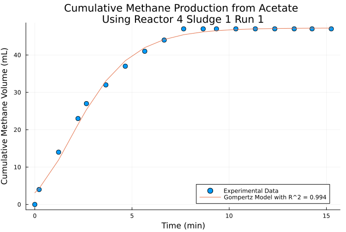

Progress Report για την Αναερόβια Χώνευση Υδρολυμένων Υπολειμμάτων Τροφών
Βιδιάνος Γιαννίτσης
0.1. Περιεχόμενα
- 1. Σκοπός
- 2. Θεωρητικό Υπόβαθρο
- 3. Αποτελέσματα από τα πειράματα υδρόλυσης
- 4. Συμπεράσματα Υδρόλυσης
- 5. Προετοιμασία υποστρώματος για χώνευση
- 6. Πειραματική Διαδικασία Αναερόβιας Χώνευσης
- 7. Αποτελέσματα πρώτου κύκλου με υδρολύματα
- 8. Αποτελέσματα δεύτερου κύκλου με υδρολύματα
- 9. Συγκριτικά αποτελέσματα αναερόβιας χώνευσης
- 10. Συμπεράσματα
- 11. Επόμενα πειράματα
1. Σκοπός
Σκοπός της διπλωματικής είναι η επεξεργασία υπολειμμάτων τροφών. Αρχικά έγινε υδρόλυση με ένα εμπορικό σκεύασμα που περιέχει ένζυμα και μικροοργανισμούς (μιξ) για διαλυτοποίηση της οργανικής ύλης και μετέπειτα αναερόβια χώνευση του υδρολύματος για παραγωγή μεθανίου.
2. Θεωρητικό Υπόβαθρο
2.1. Παράγοντες που επηρεάζουν την διεργασία
- Ποσότητα Μιξ
- Θερμοκρασία
- pH
- Αερισμός
- Αραίωση Δείγματος
- Ανάδευση
Επιλέχθηκαν οι τιμές 35 και 40 \( ^oC \) για τα πειράματα ως ενδεικτικές τιμές θερμοκρασίας στη θερμόφιλη περιοχή. Μία αρχική δοκιμή είχε γίνει και στους 45 \( ^oC \).
| Μιξ (ml) | 0 | 1 | 2 | 4 | 8 |
| Food Waste (g) | 200 | 200 | 200 | 200 | 200 |
| Νερό (ml) | 600 | 600 | 600 | 600 | 600 |
Η ανάδευση ρυθμίστηκε στα 120 rpm με βάση προηγούμενα πειράματα
3. Αποτελέσματα από τα πειράματα υδρόλυσης
3.1. Κατανομή Προιόντων
Ένα από τα βασικά κριτήρια για να κρίνουμε την διεργασία είναι τα παραγόμενα προιόντα (είτε ως σύνολο ή ξεχωριστά για το κάθε προιόν).

3.2. Συγκεντρωτικά Κριτήρια
Πολύ συχνά, αντί να ασχοληθούμε όμως με την κατανομή των προιόντων, κοιτάμε κάποια συγκεντρωτικά κριτήρια για αυτά.


3.3. Ανάλυση Ευαισθησίας
Ως ένα τελευταίο αποτέλεσμα, παρουσιάζεται μία ανάλυση ευαισθησίας.

Από αυτήν βλέπουμε πως η αύξηση της θερμοκρασίας βοηθάει στην παραγωγή τριών από τα 4 προιόντα, οπότε, αν δεν μας ενδιαφέρει πολύ η αιθανόλη, η υψηλή θερμοκρασία (40 \( ^oC \)) είναι η πιο επιθυμητή.
Μάλιστα, αν περιορίσουμε την ευαισθησία ώστε να είναι καθαρά στην ποσότητα μιξ ανά θερμοκρασία, βλέπουμε ότι στους 35 \( ^oC \), το οξικό έχει μία μεγάλη τάση μείωσης όσο προσθέτουμε το μιξ. Αυτός είναι και ο βασικότερος λόγος να προτιμηθεί η θερμοκρασία 40 \( ^oC \). Επίσης φαίνεται πως εκεί, τα τρία προιόντα που θα παραχθούν έχουν θετική ευαισθησία προς την ποσότητα μιξ.

Όμως, αν περιορίσουμε τις ποσότητες μιξ στα 2-8 ml, βλέπουμε πως αυτή η θετική ευαισθησία έχει πρακτικά χαθεί, οπότε πιθανότατα δεν έχει νόημα να πάμε πάνω από 2 ml.

4. Συμπεράσματα Υδρόλυσης
Καταλήγουμε πως η θερμοκρασία 40 \( ^oC \) είναι καλύτερη και ότι οι πολύ υψηλές ποσότητες μιξ είναι πολύ πιθανό να μην βοηθάνε την διεργασία. Οπότε για την χώνευση προετοιμάστηκε υπόστρωμα από υδρόλυση στους 40 \( ^oC \) με ποσότητες μιξ 0, 1, 2 και 4 ml.
5. Προετοιμασία υποστρώματος για χώνευση
Για να τρέξουμε την αναερόβια χώνευση, προετοιμάσαμε καινούργια υδρολύματα καθώς τα προηγούμενα δεν είχαν αποθηκευτεί. Σε αυτά έχουν μετρηθεί TS, VS, sCOD και tCOD.

6. Πειραματική Διαδικασία Αναερόβιας Χώνευσης
6.1. Πειραματική Διάταξη

Δείγματα με 125 g λάσπης (1.55 g VS), 315 g νερό και 100 mg sCOD-eq σε θερμοκρασία 37 \( ^oC \) και ανάδευση 170 rpm.
Το αέριο περνάει από διάλυμα NaOH το οποίο δεσμεύει το CO2. Έτσι μετράμε μόνο το μεθάνιο.
Η μέτρηση γίνεται με την μετατόπιση του υγρού στη προχοίδα και καταγράφεται με χρήση κάμερας.
6.2. Πειραματική Διαδικασία
Αρχικά, έγινε τροφοδοσία με 100 μL οξικό, το οποίο ενεργοποιεί την λάσπη και μας δείχνει την μέγιστη δυνατή παραγωγή μεθανίου που μπορούμε να περιμένουμε από την λάσπη αυτή. Έπειτα, τροφοδοτήσαμε με την ποσότητα υδρολύματος που χρειάζεται για να δούμε πόσο μεθάνιο θα παράγουν αυτά.
6.3. Χαρακτηριστικά λάσπης
| Χαρακτηριστικό | Τιμή |
|---|---|
| TS (g/l) | 46.28 |
| VS (g/l) | 12.36 |
| VS/TS | 0.267 |
| pH | 8.33 |
| Αλκαλικότητα (mg CaCO3/L) | 12250 |
6.4. Μοντέλο Gompertz για κινητική ανάλυση
Ένα από τα καλύτερα μοντέλα για κινητική ανάλυση αναερόβιας χώνευσης στη βιβλιογραφία είναι το τροποποιημένο μοντέλο Gompertz. Συνήθως προσαρμόζεται σε δεδομένα όγκου μεθανίου ανά g VS λάσπης ή όγκου μεθανίου ανά g COD που καταναλώνεται για σύγκριση με άλλες μελέτες.
\[ P(t) = P_{\max } \exp \left( - \exp \left[ \frac{R_{\max }e (λ-t)}{P_{\max }} + 1 \right] \right) \]
7. Αποτελέσματα πρώτου κύκλου με υδρολύματα
7.1. Δείγμα 0


7.2. Δείγμα 1


7.3. Δείγμα 2

7.4. Δείγμα 4


7.5. Untreated FW


8. Αποτελέσματα δεύτερου κύκλου με υδρολύματα
8.1. Δείγμα 0
Τελικό pH = 8.93

8.2. Δείγμα 1
Τελικό pH = 7.76

8.3. Δείγμα 2
Τελικό pH 7.19

8.4. Δείγμα 4
Τελικό pH 6.76

8.5. Untreated FW
Τελικό pH = 4.22

Λογικά το πολύ όξινο αυτό pH είναι και ο λόγος για την χαμηλή παραγωγικότητα του δείγματος αυτού. Άρα φαίνεται πως η χώνευση ανεπεξεργαστού FW είναι ασταθείς και μπορεί να οδηγήσει σε κατάρρευση.
9. Συγκριτικά αποτελέσματα αναερόβιας χώνευσης
9.1. Βιοχημικό Δυναμικό Μεθανίου (BMP)


9.2. Ρυθμός Παραγωγής Μεθανίου και Δραστικότητα Λάσπης
Μονάδες: Rmax [=] \( \frac{\text{ml CH$_4$}}{hour} \) και SMA [=] \( \frac{\text{ml CH$_4$}}{\text{day} \cdot \text{g VS}} \).
| SampleName | Rmax Acetate | Rmax Hydrolysate1 | Rmax Hydrolysate2 | SMA Acetate | SMA Hydrolysate1 | SMA Hydrolysate2 |
|---|---|---|---|---|---|---|
| Sample 0 | 459.84 | 0.148 | 0.043 | 7119.36 | 2.304 | 0.672 |
| Sample 1 | 326.88 | 0.29 | 0.108 | 5061.6 | 3.912 | 1.728 |
| Sample 2 | 374.04 | 0.187 | 0.114 | 5676.48 | 2.808 | 1.776 |
| Sample 4 | 579.0 | 0.181 | 0.08 | 8965.44 | 2.52 | 1.224 |
| Sample FW | 294.06 | 0.081 | 0.054 | 4554.72 | 1.248 | 0.84 |
9.3. Φάση Καθυστέρησης
- Τα πειράματα με το οξικό οξύ δεν παρουσίασαν φάση καθυστέρησης, όπως και θα αναμενόταν
- Ο πρώτος κύκλος πειραμάτων με υδρολύματα δεν παρουσίασε ούτε αυτός φάση καθυστέρησης με πιθανή εξήγηση ότι υπάρχει αρκετή ποσότητα διαλυτού οξικού οξέος στα δείγματα
- Στον δεύτερο κύκλο πειραμάτων, τρία δείγματα: τα 0, 1 και 4 έχουν lag time διάρκειας 3.8, 4.5 και 0.3 ώρες αντίστοιχα. Είναι περίεργο που συνέβη μόνο σε αυτά, αλλά είναι εν γένει η αναμενόμενη συμπεριφορά της λάσπης σε ένα περίπλοκο απόβλητο.
10. Συμπεράσματα
- Τα πειράματα έχουν καλή επαναληψιμότητα, ειδικά στην ποσότητα μεθανίου που παράγεται.
- Το περισσότερο μεθάνιο και ο γρηγορότερος ρυθμός παραγωγής είναι στο υδρόλυμα με 1 ml μιξ ενώ επόμενο καλύτερο είναι το 2 ml μιξ
- Φαίνεται πως η προσθήκη του μιξ ενζύμων και μικροοργανισμών επιδρά θετικά στην διεργασία, αλλά η προσθήκη μεγάλης ποσότητας δεν είναι αναγκαστικά καλή.
- Το ανεπεξέργαστο FW δεν είχε καλή απόδοση και παρατηρήθηκε αστάθεια σε αυτό, οπότε φαίνεται πως η προεπεξεργασία βοήθησε σημαντικά την χώνευση.
11. Επόμενα πειράματα
Πειραματικός κύκλος με το 2ο δείγμα λάσπης για να δούμε αν θα έχει την ίδια τάση.
Χώνευση με υδρόλυμα Orca?